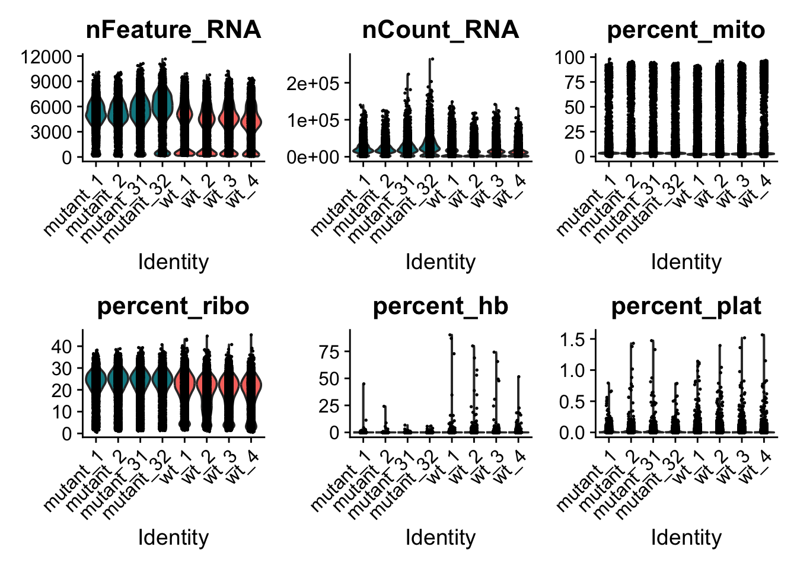
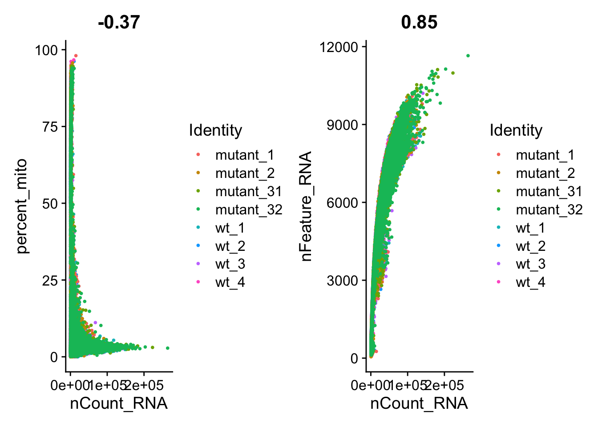

library(Matrix) # install.packages("Matrix")
library(hdf5r) # install.packages("hdf5r")
library(rhdf5) # BiocManager::install("rhdf5")
library(dplyr)
library(ggplot2)
library(patchwork)
library(DoubletFinder) # remotes::install_github('chris-mcginnis-ucsf/DoubletFinder', force = TRUE)
library(Seurat) ## paquete principal de este capítuloDescarga y Normalizacion
Análisis de datos
Cargar paquetes y datasets en R
Cargar paquetes
Descargar los datasets desde GEO
Archivos que se descargan del estudio GSE275213:
GSE275213_series_matrix.txt.gz- Contiene la matriz de expresión génica resumida.
- Es un archivo tabular donde cada fila corresponde a un gen y cada columna a una muestra.
- Útil para análisis rápidos sin necesidad de reconstruir todo el objeto de secuenciación.
..._barcodes.tsv.gz- Lista de códigos de barras celulares.
- Cada código identifica una célula individual en el experimento de scRNA-seq.
- Permite distinguir las lecturas de cada célula.
..._features.tsv.gz- Contiene la lista de genes (features) analizados.
- Incluye identificadores como el nombre del gen y, a veces, anotaciones adicionales.
- Se usa para mapear las filas de la matriz de conteos.
..._matrix.mtx.gz- Es la matriz de conteos cruda en formato Matrix Market.
- Representa cuántas veces se detectó cada gen en cada célula.
- Este archivo, junto con barcodes y features, forma el conjunto completo para reconstruir el objeto de análisis en herramientas como Seurat.
Nota importante: cada muestra tenía archivos independientes. Es decir, la muestra GSM8472849 cuenta con su respectivo archivo GSM8472849…_barcodes.tsv.gz, GSM8472849…_features.tsv.gz y GSM8472849…_matrix.mtx.gz. Fueron descargados cada uno de los archivos de cada muestra.
Datos WT
Solo se muestra un ejemplo de la descarga de datos para cada grupo (WT y R396Q).
# Nombre de la carpeta
dest_dir <- "GSM8472849"
# Si la carpeta existe, eliminarla primero
if (dir.exists(dest_dir)) {
unlink(dest_dir, recursive = TRUE)
message("Carpeta eliminada: ", dest_dir)
}
# Crear la carpeta nuevamente
dir.create(dest_dir)
message("Carpeta creada: ", dest_dir)
# Definir carpeta destino
if (!dir.exists(dest_dir)) dir.create(dest_dir)
# Aumentar el tiempo de espera a 10 minutos (600 segundos)
options(timeout = 600)
# Lista de URLs a descargar
urls <- c(
"https://ftp.ncbi.nlm.nih.gov/geo/samples/GSM8472nnn/GSM8472849/suppl/GSM8472849%5F2660235%5FTH%5FGata2%5FWT%5F1%5Fbarcodes%2Etsv%2Egz",
"https://ftp.ncbi.nlm.nih.gov/geo/samples/GSM8472nnn/GSM8472849/suppl/GSM8472849%5F2660235%5FTH%5FGata2%5FWT%5F1%5Ffeatures%2Etsv%2Egz",
"https://ftp.ncbi.nlm.nih.gov/geo/samples/GSM8472nnn/GSM8472849/suppl/GSM8472849%5F2660235%5FTH%5FGata2%5FWT%5F1%5Fmatrix%2Emtx%2Egz"
)
# Descargar cada archivo
for (url in urls) {
dest_file <- file.path(dest_dir, basename(url))
if (!file.exists(dest_file)) {
message("Descargando: ", basename(url))
download.file(url, destfile = dest_file, mode = "wb")
} else {
message("Ya existe: ", basename(url))
}
}
##Renombrabdo los archivos ya que mas adelante el comando "" solo espera encontrar en la carpeta barcodes.tsv.gz, features.tsv.gz etc.
file.rename("GSM8472849/GSM8472849%5F2660235%5FTH%5FGata2%5FWT%5F1%5Fbarcodes%2Etsv%2Egz", "GSM8472849/barcodes.tsv.gz")
file.rename("GSM8472849/GSM8472849%5F2660235%5FTH%5FGata2%5FWT%5F1%5Ffeatures%2Etsv%2Egz", "GSM8472849/features.tsv.gz")
file.rename("GSM8472849/GSM8472849%5F2660235%5FTH%5FGata2%5FWT%5F1%5Fmatrix%2Emtx%2Egz", "GSM8472849/matrix.mtx.gz")# Nombre de la carpeta
dest_dir <- "GSM8472850"
# Si la carpeta existe, eliminarla primero
if (dir.exists(dest_dir)) {
unlink(dest_dir, recursive = TRUE)
message("Carpeta eliminada: ", dest_dir)
}Carpeta eliminada: GSM8472850# Crear la carpeta nuevamente
dir.create(dest_dir)
message("Carpeta creada: ", dest_dir)Carpeta creada: GSM8472850# Definir carpeta destino
if (!dir.exists(dest_dir)) dir.create(dest_dir)
# Aumentar el tiempo de espera a 10 minutos (600 segundos)
options(timeout = 600)
# Lista de URLs a descargar
urls <- c(
"https://ftp.ncbi.nlm.nih.gov/geo/samples/GSM8472nnn/GSM8472850/suppl/GSM8472850%5F2660236%5FTH%5FGata2%5FWT%5F2%5Fbarcodes%2Etsv%2Egz",
"https://ftp.ncbi.nlm.nih.gov/geo/samples/GSM8472nnn/GSM8472850/suppl/GSM8472850%5F2660236%5FTH%5FGata2%5FWT%5F2%5Ffeatures%2Etsv%2Egz",
"https://ftp.ncbi.nlm.nih.gov/geo/samples/GSM8472nnn/GSM8472850/suppl/GSM8472850%5F2660236%5FTH%5FGata2%5FWT%5F2%5Fmatrix%2Emtx%2Egz"
)
# Descargar cada archivo
for (url in urls) {
dest_file <- file.path(dest_dir, basename(url))
if (!file.exists(dest_file)) {
message("Descargando: ", basename(url))
download.file(url, destfile = dest_file, mode = "wb")
} else {
message("Ya existe: ", basename(url))
}
}Descargando: GSM8472850%5F2660236%5FTH%5FGata2%5FWT%5F2%5Fbarcodes%2Etsv%2EgzDescargando: GSM8472850%5F2660236%5FTH%5FGata2%5FWT%5F2%5Ffeatures%2Etsv%2EgzDescargando: GSM8472850%5F2660236%5FTH%5FGata2%5FWT%5F2%5Fmatrix%2Emtx%2Egz##Renombrabdo los archivos ya que mas adelante el comando "" solo espera encontrar en la carpeta barcodes.tsv.gz, features.tsv.gz etc.
file.rename("GSM8472850/GSM8472850%5F2660236%5FTH%5FGata2%5FWT%5F2%5Fbarcodes%2Etsv%2Egz", "GSM8472850/barcodes.tsv.gz")[1] TRUEfile.rename("GSM8472850/GSM8472850%5F2660236%5FTH%5FGata2%5FWT%5F2%5Ffeatures%2Etsv%2Egz", "GSM8472850/features.tsv.gz")[1] TRUEfile.rename("GSM8472850/GSM8472850%5F2660236%5FTH%5FGata2%5FWT%5F2%5Fmatrix%2Emtx%2Egz", "GSM8472850/matrix.mtx.gz")[1] TRUE# Nombre de la carpeta
dest_dir <- "GSM8472851"
# Si la carpeta existe, eliminarla primero
if (dir.exists(dest_dir)) {
unlink(dest_dir, recursive = TRUE)
message("Carpeta eliminada: ", dest_dir)
}Carpeta eliminada: GSM8472851# Crear la carpeta nuevamente
dir.create(dest_dir)
message("Carpeta creada: ", dest_dir)Carpeta creada: GSM8472851# Definir carpeta destino
if (!dir.exists(dest_dir)) dir.create(dest_dir)
# Aumentar el tiempo de espera a 10 minutos (600 segundos)
options(timeout = 600)
# Lista de URLs a descargar
urls <- c(
"https://ftp.ncbi.nlm.nih.gov/geo/samples/GSM8472nnn/GSM8472851/suppl/GSM8472851%5F2660237%5FTH%5FGata2%5FWT%5F3%5Fbarcodes%2Etsv%2Egz",
"https://ftp.ncbi.nlm.nih.gov/geo/samples/GSM8472nnn/GSM8472851/suppl/GSM8472851%5F2660237%5FTH%5FGata2%5FWT%5F3%5Ffeatures%2Etsv%2Egz",
"https://ftp.ncbi.nlm.nih.gov/geo/samples/GSM8472nnn/GSM8472851/suppl/GSM8472851%5F2660237%5FTH%5FGata2%5FWT%5F3%5Fmatrix%2Emtx%2Egz"
)
# Descargar cada archivo
for (url in urls) {
dest_file <- file.path(dest_dir, basename(url))
if (!file.exists(dest_file)) {
message("Descargando: ", basename(url))
download.file(url, destfile = dest_file, mode = "wb")
} else {
message("Ya existe: ", basename(url))
}
}Descargando: GSM8472851%5F2660237%5FTH%5FGata2%5FWT%5F3%5Fbarcodes%2Etsv%2EgzDescargando: GSM8472851%5F2660237%5FTH%5FGata2%5FWT%5F3%5Ffeatures%2Etsv%2EgzDescargando: GSM8472851%5F2660237%5FTH%5FGata2%5FWT%5F3%5Fmatrix%2Emtx%2Egz##Renombrabdo los archivos ya que mas adelante el comando "" solo espera encontrar en la carpeta barcodes.tsv.gz, features.tsv.gz etc.
file.rename("GSM8472851/GSM8472851%5F2660237%5FTH%5FGata2%5FWT%5F3%5Fbarcodes%2Etsv%2Egz", "GSM8472851/barcodes.tsv.gz")[1] TRUEfile.rename("GSM8472851/GSM8472851%5F2660237%5FTH%5FGata2%5FWT%5F3%5Ffeatures%2Etsv%2Egz", "GSM8472851/features.tsv.gz")[1] TRUEfile.rename("GSM8472851/GSM8472851%5F2660237%5FTH%5FGata2%5FWT%5F3%5Fmatrix%2Emtx%2Egz", "GSM8472851/matrix.mtx.gz")[1] TRUE# Nombre de la carpeta
dest_dir <- "GSM8472852"
# Si la carpeta existe, eliminarla primero
if (dir.exists(dest_dir)) {
unlink(dest_dir, recursive = TRUE)
message("Carpeta eliminada: ", dest_dir)
}Carpeta eliminada: GSM8472852# Crear la carpeta nuevamente
dir.create(dest_dir)
message("Carpeta creada: ", dest_dir)Carpeta creada: GSM8472852# Definir carpeta destino
if (!dir.exists(dest_dir)) dir.create(dest_dir)
# Aumentar el tiempo de espera a 10 minutos (600 segundos)
options(timeout = 600)
# Lista de URLs a descargar
urls <- c(
"https://ftp.ncbi.nlm.nih.gov/geo/samples/GSM8472nnn/GSM8472852/suppl/GSM8472852%5F2660238%5FTH%5FGata2%5FWT%5F4%5Fbarcodes%2Etsv%2Egz",
"https://ftp.ncbi.nlm.nih.gov/geo/samples/GSM8472nnn/GSM8472852/suppl/GSM8472852%5F2660238%5FTH%5FGata2%5FWT%5F4%5Ffeatures%2Etsv%2Egz",
"https://ftp.ncbi.nlm.nih.gov/geo/samples/GSM8472nnn/GSM8472852/suppl/GSM8472852%5F2660238%5FTH%5FGata2%5FWT%5F4%5Fmatrix%2Emtx%2Egz"
)
# Descargar cada archivo
for (url in urls) {
dest_file <- file.path(dest_dir, basename(url))
if (!file.exists(dest_file)) {
message("Descargando: ", basename(url))
download.file(url, destfile = dest_file, mode = "wb")
} else {
message("Ya existe: ", basename(url))
}
}Descargando: GSM8472852%5F2660238%5FTH%5FGata2%5FWT%5F4%5Fbarcodes%2Etsv%2EgzDescargando: GSM8472852%5F2660238%5FTH%5FGata2%5FWT%5F4%5Ffeatures%2Etsv%2EgzDescargando: GSM8472852%5F2660238%5FTH%5FGata2%5FWT%5F4%5Fmatrix%2Emtx%2Egzfile.rename("GSM8472852/GSM8472852%5F2660238%5FTH%5FGata2%5FWT%5F4%5Fbarcodes%2Etsv%2Egz", "GSM8472852/barcodes.tsv.gz")[1] TRUEfile.rename("GSM8472852/GSM8472852%5F2660238%5FTH%5FGata2%5FWT%5F4%5Ffeatures%2Etsv%2Egz", "GSM8472852/features.tsv.gz")[1] TRUEfile.rename("GSM8472852/GSM8472852%5F2660238%5FTH%5FGata2%5FWT%5F4%5Fmatrix%2Emtx%2Egz", "GSM8472852/matrix.mtx.gz")[1] TRUEDatos R396Q
# Nombre de la carpeta
dest_dir <- "GSM8472853"
# Si la carpeta existe, eliminarla primero
if (dir.exists(dest_dir)) {
unlink(dest_dir, recursive = TRUE)
message("Carpeta eliminada: ", dest_dir)
}Carpeta eliminada: GSM8472853# Crear la carpeta nuevamente
dir.create(dest_dir)
message("Carpeta creada: ", dest_dir)Carpeta creada: GSM8472853# Definir carpeta destino
if (!dir.exists(dest_dir)) dir.create(dest_dir)
# Aumentar el tiempo de espera a 10 minutos (600 segundos)
options(timeout = 600)
# Lista de URLs a descargar
urls <- c(
"https://www.ncbi.nlm.nih.gov/geo/download/?acc=GSM8472853&format=file&file=GSM8472853%5F2660239%5FTH%5FGata2%5FR396Q%5F1%5Fbarcodes%2Etsv%2Egz", # barcodes (celulas)
"https://www.ncbi.nlm.nih.gov/geo/download/?acc=GSM8472853&format=file&file=GSM8472853%5F2660239%5FTH%5FGata2%5FR396Q%5F1%5Ffeatures%2Etsv%2Egz", # features (genes)
"https://www.ncbi.nlm.nih.gov/geo/download/?acc=GSM8472853&format=file&file=GSM8472853%5F2660239%5FTH%5FGata2%5FR396Q%5F1%5Fmatrix%2Emtx%2Egz" # matrix de conteos cruda
)
# Descargar cada archivo
for (url in urls) {
dest_file <- file.path(dest_dir, basename(url))
if (!file.exists(dest_file)) {
message("Descargando: ", basename(url))
download.file(url, destfile = dest_file, mode = "wb")
} else {
message("Ya existe: ", basename(url))
}
}Descargando: ?acc=GSM8472853&format=file&file=GSM8472853%5F2660239%5FTH%5FGata2%5FR396Q%5F1%5Fbarcodes%2Etsv%2EgzDescargando: ?acc=GSM8472853&format=file&file=GSM8472853%5F2660239%5FTH%5FGata2%5FR396Q%5F1%5Ffeatures%2Etsv%2EgzDescargando: ?acc=GSM8472853&format=file&file=GSM8472853%5F2660239%5FTH%5FGata2%5FR396Q%5F1%5Fmatrix%2Emtx%2Egzfile.rename("GSM8472853/?acc=GSM8472853&format=file&file=GSM8472853%5F2660239%5FTH%5FGata2%5FR396Q%5F1%5Fbarcodes%2Etsv%2Egz", "GSM8472853/barcodes.tsv.gz")[1] TRUEfile.rename("GSM8472853/?acc=GSM8472853&format=file&file=GSM8472853%5F2660239%5FTH%5FGata2%5FR396Q%5F1%5Ffeatures%2Etsv%2Egz", "GSM8472853/features.tsv.gz")[1] TRUEfile.rename("GSM8472853/?acc=GSM8472853&format=file&file=GSM8472853%5F2660239%5FTH%5FGata2%5FR396Q%5F1%5Fmatrix%2Emtx%2Egz", "GSM8472853/matrix.mtx.gz")[1] TRUE# Nombre de la carpeta
dest_dir <- "GSM8472854"
# Si la carpeta existe, eliminarla primero
if (dir.exists(dest_dir)) {
unlink(dest_dir, recursive = TRUE)
message("Carpeta eliminada: ", dest_dir)
}Carpeta eliminada: GSM8472854# Crear la carpeta nuevamente
dir.create(dest_dir)
message("Carpeta creada: ", dest_dir)Carpeta creada: GSM8472854# Definir carpeta destino
if (!dir.exists(dest_dir)) dir.create(dest_dir)
# Aumentar el tiempo de espera a 10 minutos (600 segundos)
options(timeout = 600)
# Lista de URLs a descargar
urls <- c(
"https://ftp.ncbi.nlm.nih.gov/geo/samples/GSM8472nnn/GSM8472854/suppl/GSM8472854%5F2660240%5FTH%5FGata2%5FR396Q%5F2%5Fbarcodes.tsv.gz", # barcodes (celulas
"https://ftp.ncbi.nlm.nih.gov/geo/samples/GSM8472nnn/GSM8472854/suppl/GSM8472854%5F2660240%5FTH%5FGata2%5FR396Q%5F2%5Ffeatures.tsv.gz", # features (genes)
"https://ftp.ncbi.nlm.nih.gov/geo/samples/GSM8472nnn/GSM8472854/suppl/GSM8472854%5F2660240%5FTH%5FGata2%5FR396Q%5F2%5Fmatrix.mtx.gz" # matrix de conteos cruda
)
# Descargar cada archivo
for (url in urls) {
dest_file <- file.path(dest_dir, basename(url))
if (!file.exists(dest_file)) {
message("Descargando: ", basename(url))
download.file(url, destfile = dest_file, mode = "wb")
} else {
message("Ya existe: ", basename(url))
}
}Descargando: GSM8472854%5F2660240%5FTH%5FGata2%5FR396Q%5F2%5Fbarcodes.tsv.gzDescargando: GSM8472854%5F2660240%5FTH%5FGata2%5FR396Q%5F2%5Ffeatures.tsv.gzDescargando: GSM8472854%5F2660240%5FTH%5FGata2%5FR396Q%5F2%5Fmatrix.mtx.gzfile.rename("GSM8472854/GSM8472854%5F2660240%5FTH%5FGata2%5FR396Q%5F2%5Fbarcodes.tsv.gz", "GSM8472854/barcodes.tsv.gz")[1] TRUEfile.rename("GSM8472854/GSM8472854%5F2660240%5FTH%5FGata2%5FR396Q%5F2%5Ffeatures.tsv.gz", "GSM8472854/features.tsv.gz")[1] TRUEfile.rename("GSM8472854/GSM8472854%5F2660240%5FTH%5FGata2%5FR396Q%5F2%5Fmatrix.mtx.gz", "GSM8472854/matrix.mtx.gz")[1] TRUE# Nombre de la carpeta
dest_dir <- "GSM8472855"
# Si la carpeta existe, eliminarla primero
if (dir.exists(dest_dir)) {
unlink(dest_dir, recursive = TRUE)
message("Carpeta eliminada: ", dest_dir)
}Carpeta eliminada: GSM8472855# Crear la carpeta nuevamente
dir.create(dest_dir)
message("Carpeta creada: ", dest_dir)Carpeta creada: GSM8472855# Definir carpeta destino
if (!dir.exists(dest_dir)) dir.create(dest_dir)
# Aumentar el tiempo de espera a 10 minutos (600 segundos)
options(timeout = 600)
# Lista de URLs a descargar
urls <- c(
"https://ftp.ncbi.nlm.nih.gov/geo/samples/GSM8472nnn/GSM8472855/suppl/GSM8472855%5F2660241%5FTH%5FGata2%5FR396Q%5F3%5F1%5Fbarcodes.tsv.gz", # barcodes (celulas)
"https://ftp.ncbi.nlm.nih.gov/geo/samples/GSM8472nnn/GSM8472855/suppl/GSM8472855%5F2660241%5FTH%5FGata2%5FR396Q%5F3%5F1%5Ffeatures.tsv.gz", # features (genes)
"https://ftp.ncbi.nlm.nih.gov/geo/samples/GSM8472nnn/GSM8472855/suppl/GSM8472855%5F2660241%5FTH%5FGata2%5FR396Q%5F3%5F1%5Fmatrix.mtx.gz" # matrix de conteos cruda
)
# Descargar cada archivo
for (url in urls) {
dest_file <- file.path(dest_dir, basename(url))
if (!file.exists(dest_file)) {
message("Descargando: ", basename(url))
download.file(url, destfile = dest_file, mode = "wb")
} else {
message("Ya existe: ", basename(url))
}
}Descargando: GSM8472855%5F2660241%5FTH%5FGata2%5FR396Q%5F3%5F1%5Fbarcodes.tsv.gzDescargando: GSM8472855%5F2660241%5FTH%5FGata2%5FR396Q%5F3%5F1%5Ffeatures.tsv.gzDescargando: GSM8472855%5F2660241%5FTH%5FGata2%5FR396Q%5F3%5F1%5Fmatrix.mtx.gzfile.rename("GSM8472855/GSM8472855%5F2660241%5FTH%5FGata2%5FR396Q%5F3%5F1%5Fbarcodes.tsv.gz", "GSM8472855/barcodes.tsv.gz")[1] TRUEfile.rename("GSM8472855/GSM8472855%5F2660241%5FTH%5FGata2%5FR396Q%5F3%5F1%5Ffeatures.tsv.gz", "GSM8472855/features.tsv.gz")[1] TRUEfile.rename("GSM8472855/GSM8472855%5F2660241%5FTH%5FGata2%5FR396Q%5F3%5F1%5Fmatrix.mtx.gz", "GSM8472855/matrix.mtx.gz")[1] TRUE# Nombre de la carpeta
dest_dir <- "GSM8472856"
# Si la carpeta existe, eliminarla primero
if (dir.exists(dest_dir)) {
unlink(dest_dir, recursive = TRUE)
message("Carpeta eliminada: ", dest_dir)
}Carpeta eliminada: GSM8472856# Crear la carpeta nuevamente
dir.create(dest_dir)
message("Carpeta creada: ", dest_dir)Carpeta creada: GSM8472856# Definir carpeta destino
if (!dir.exists(dest_dir)) dir.create(dest_dir)
# Aumentar el tiempo de espera a 10 minutos (600 segundos)
options(timeout = 600)
# Lista de URLs a descargar
urls <- c(
"https://ftp.ncbi.nlm.nih.gov/geo/samples/GSM8472nnn/GSM8472856/suppl/GSM8472856%5F2660242%5FTH%5FGata2%5FR396Q%5F3%5F2%5Fbarcodes.tsv.gz", # barcodes (celulas)
"https://ftp.ncbi.nlm.nih.gov/geo/samples/GSM8472nnn/GSM8472856/suppl/GSM8472856%5F2660242%5FTH%5FGata2%5FR396Q%5F3%5F2%5Ffeatures.tsv.gz", # features (genes)
"https://ftp.ncbi.nlm.nih.gov/geo/samples/GSM8472nnn/GSM8472856/suppl/GSM8472856%5F2660242%5FTH%5FGata2%5FR396Q%5F3%5F2%5Fmatrix.mtx.gz" # matrix de conteos cruda
)
# Descargar cada archivo
for (url in urls) {
dest_file <- file.path(dest_dir, basename(url))
if (!file.exists(dest_file)) {
message("Descargando: ", basename(url))
download.file(url, destfile = dest_file, mode = "wb")
} else {
message("Ya existe: ", basename(url))
}
}Descargando: GSM8472856%5F2660242%5FTH%5FGata2%5FR396Q%5F3%5F2%5Fbarcodes.tsv.gzDescargando: GSM8472856%5F2660242%5FTH%5FGata2%5FR396Q%5F3%5F2%5Ffeatures.tsv.gzDescargando: GSM8472856%5F2660242%5FTH%5FGata2%5FR396Q%5F3%5F2%5Fmatrix.mtx.gzfile.rename("GSM8472856/GSM8472856%5F2660242%5FTH%5FGata2%5FR396Q%5F3%5F2%5Fbarcodes.tsv.gz", "GSM8472856/barcodes.tsv.gz")[1] TRUEfile.rename("GSM8472856/GSM8472856%5F2660242%5FTH%5FGata2%5FR396Q%5F3%5F2%5Ffeatures.tsv.gz", "GSM8472856/features.tsv.gz")[1] TRUEfile.rename("GSM8472856/GSM8472856%5F2660242%5FTH%5FGata2%5FR396Q%5F3%5F2%5Fmatrix.mtx.gz", "GSM8472856/matrix.mtx.gz")[1] TRUEMetadata
# Nombre de la carpeta
dest_dir <- "metadata"
# Si la carpeta existe, eliminarla primero
if (dir.exists(dest_dir)) {
unlink(dest_dir, recursive = TRUE)
message("Carpeta eliminada: ", dest_dir)
}Carpeta eliminada: metadata# Crear la carpeta nuevamente
dir.create(dest_dir)
message("Carpeta creada: ", dest_dir)Carpeta creada: metadata# Definir carpeta destino
if (!dir.exists(dest_dir)) dir.create(dest_dir)
# Aumentar el tiempo de espera a 10 minutos (600 segundos)
options(timeout = 600)
# Lista de URLs a descargar
urls <- c(
"https://ftp.ncbi.nlm.nih.gov/geo/series/GSE275nnn/GSE275213/matrix/GSE275213_series_matrix.txt.gz"
)
# Descargar cada archivo
for (url in urls) {
dest_file <- file.path(dest_dir, basename(url))
if (!file.exists(dest_file)) {
message("Descargando: ", basename(url))
download.file(url, destfile = dest_file, mode = "wb")
} else {
message("Ya existe: ", basename(url))
}
}Descargando: GSE275213_series_matrix.txt.gzImportar la metadata en R
# Leer metadatos de la serie
meta <- read.delim("metadata/GSE275213_series_matrix.txt.gz",
skip = 55, # saltar las líneas iniciales de cabecera.
header = TRUE, # Que la celda tenga ese nombre en la columna
fill = TRUE) # rellena filas cortas con NA para que todas tengan el mismo número de columnas.Guardar en formato HDF5 de 10x
Cada muestra tiene su propio archivo de barcodes, features, y matriz de conteos, mismos que se guardaron en objetos independientes.
##Creando los archivos h5
data.WT_replicate1<- Read10X(data.dir = "GSM8472849/")
data.WT_replicate2<- Read10X(data.dir = "GSM8472850/")
data.WT_replicate3<- Read10X(data.dir = "GSM8472851/")
data.WT_replicate4<- Read10X(data.dir = "GSM8472852/")
data.R396Q_replicate1<- Read10X(data.dir = "GSM8472853/")
data.R396Q_replicate2<- Read10X(data.dir = "GSM8472854/")
data.R396Q_replicate31<- Read10X(data.dir = "GSM8472855/")
data.R396Q_replicate32<- Read10X(data.dir = "GSM8472856/")Crear objetos Seurat y fusionar objetos
# Crear objetos Seurat a partir de las matrices de conteo
sdata.wt_1 <- CreateSeuratObject(data.WT_replicate1, project = "wt_1")
sdata.wt_2 <- CreateSeuratObject(data.WT_replicate2, project = "wt_2")
sdata.wt_3 <- CreateSeuratObject(data.WT_replicate3, project = "wt_3")
sdata.wt_4 <- CreateSeuratObject(data.WT_replicate4, project = "wt_4")
sdata.mutant_1 <- CreateSeuratObject(data.R396Q_replicate1, project = "mutant_1")
sdata.mutant_2 <- CreateSeuratObject(data.R396Q_replicate2, project = "mutant_2")
sdata.mutant_31 <- CreateSeuratObject(data.R396Q_replicate31, project = "mutant_31")
sdata.mutant_32 <- CreateSeuratObject(data.R396Q_replicate32, project = "mutant_32")
# Añadir metadatos indicando condición
sdata.wt_1$type <- "ctrl"
sdata.wt_2$type <- "ctrl"
sdata.wt_3$type <- "ctrl"
sdata.wt_4$type <- "ctrl"
sdata.mutant_1$type <- "mtnt"
sdata.mutant_2$type <- "mtnt"
sdata.mutant_31$type <- "mtnt"
sdata.mutant_32$type <- "mtnt"
wt <- merge(sdata.wt_1,
y = c(sdata.wt_2,sdata.wt_3,sdata.wt_4))Warning: Some cell names are duplicated across objects provided. Renaming to
enforce unique cell names.mut <- merge(sdata.mutant_1,
y = c(sdata.mutant_2,sdata.mutant_31,sdata.mutant_32))Warning: Some cell names are duplicated across objects provided. Renaming to
enforce unique cell names.rm(
sdata.wt_1,sdata.wt_2,sdata.wt_3,sdata.wt_4,
sdata.mutant_1,sdata.mutant_2,sdata.mutant_31,sdata.mutant_32,
data.WT_replicate1,data.WT_replicate2,data.WT_replicate3,data.WT_replicate4,
data.R396Q_replicate1,data.R396Q_replicate2,data.R396Q_replicate31,data.R396Q_replicate32
)
gc() used (Mb) gc trigger (Mb) limit (Mb) max used (Mb)
Ncells 4041950 215.9 7690085 410.7 NA 6013347 321.2
Vcells 557487784 4253.3 1650295169 12590.8 16384 1748776481 13342.2alldata <- merge(wt, y = mut)Warning: Some cell names are duplicated across objects provided. Renaming to
enforce unique cell names.Visualización de la metadata:
head(alldata@meta.data, 10) orig.ident nCount_RNA nFeature_RNA type
AAACCCAAGACCAAAT-1_1_1 wt_1 18564 5436 ctrl
AAACCCAAGAGCCGAT-1_1_1 wt_1 21182 5366 ctrl
AAACCCAAGATCCCAT-1_1_1 wt_1 1033 591 ctrl
AAACCCACAAACGGCA-1_1_1 wt_1 2353 1439 ctrl
AAACCCACAAGGGCAT-1_1_1 wt_1 36065 7247 ctrl
AAACCCACACAGTCAT-1_1_1 wt_1 46746 6707 ctrl
AAACCCACATGAAGGC-1_1_1 wt_1 15834 4461 ctrl
AAACCCACATGGTGGA-1_1_1 wt_1 1814 1066 ctrl
AAACCCAGTCCAATCA-1_1_1 wt_1 24829 5756 ctrl
AAACGAAAGAGTTGAT-1_1_1 wt_1 17615 5417 ctrlCalcular la calidad de muestras
Genes mitocondriales (`^mt-)
- Calidad celular (apoptosis, estrés).
Genes ribosomales (
^Rp[sl])- Altos porcentajes de genes ribosomales pueden reflejar células en estados de alta síntesis proteica o, en algunos casos, ruido técnico.
- Sirven para evaluar si ciertos clusters están dominados por ribosomas más que por señales biológicas relevantes.
Genes de hemoglobina (
^Hb[^(p|e|s)])- Se expresan en células de origen eritroide o contaminaciones de glóbulos rojos.
- Un alto porcentaje puede indicar contaminación de eritrocitos en la preparación de muestras.
Marcadores de plaquetas (
Pecam1|Pf4)- Se usan para detectar contaminación por plaquetas o subpoblaciones plaquetarias.
- Ayudan a decidir si excluir esas células o interpretarlas como una población real.
# Genes mitocondriales (mt- en mouse)
alldata <- PercentageFeatureSet(alldata, "^mt-", col.name = "percent_mito")
# Genes ribosomales (Rps / Rpl en mouse)
alldata <- PercentageFeatureSet(alldata, "^Rp[sl]", col.name = "percent_ribo")
# Genes de hemoglobina (Hb en mouse)
alldata <- PercentageFeatureSet(alldata, "^Hb[^(p|e|s)]", col.name = "percent_hb")
# Marcadores de plaquetas (nombres en formato mouse)
alldata <- PercentageFeatureSet(alldata, "Pecam1|Pf4", col.name = "percent_plat")
head(alldata[[]]) orig.ident nCount_RNA nFeature_RNA type percent_mito
AAACCCAAGACCAAAT-1_1_1 wt_1 18564 5436 ctrl 2.343245
AAACCCAAGAGCCGAT-1_1_1 wt_1 21182 5366 ctrl 2.525729
AAACCCAAGATCCCAT-1_1_1 wt_1 1033 591 ctrl 7.357212
AAACCCACAAACGGCA-1_1_1 wt_1 2353 1439 ctrl 5.439864
AAACCCACAAGGGCAT-1_1_1 wt_1 36065 7247 ctrl 2.806045
AAACCCACACAGTCAT-1_1_1 wt_1 46746 6707 ctrl 4.216404
percent_ribo percent_hb percent_plat
AAACCCAAGACCAAAT-1_1_1 18.185736 0.086188321 0.000000000
AAACCCAAGAGCCGAT-1_1_1 23.737135 0.033046927 0.009441979
AAACCCAAGATCCCAT-1_1_1 21.200387 0.000000000 0.000000000
AAACCCACAAACGGCA-1_1_1 8.329792 0.042498938 0.042498938
AAACCCACAAGGGCAT-1_1_1 21.486205 0.002772771 0.005545543
AAACCCACACAGTCAT-1_1_1 19.257263 0.055619732 0.000000000Los siguientes plots muestran la distribución de los datos y así definir los valores que se utilizarán en el filtrado de datos. Estas visualizaciones permiten ajustar los parámetros a nuestros datos.
Para el Volcano Plot, en la gráfica del número de Features (genes) se observa que los datos tienen una amplia distribución, desde valores pequeños como 200 hasta datos que alcanzan un valor de ~12,000. Escogimos quedarnos con células que tienen hasta 6,000 genes. Esto debido a que fue el mismo umbral ocupado en el artículo original.
Para la segunda gráfica, Count_RNA, indica el número total de UMIs que hay en cada célula. Se obtuvieron porcentajes de lecturas mitocondriales bastante elevadas, por lo que decidimos disminuir la rigidez del filtrado: en vez de quedarnos con las células que tuvieran un porcentaje menor al 5, nos quedamos con células que tienen un porcentaje menor al 10.
feats <- c("nFeature_RNA", "nCount_RNA", "percent_mito", "percent_ribo", "percent_hb", "percent_plat")
# feats <- c("nFeature_RNA", "nCount_RNA", "percent_mito")
VlnPlot(alldata, group.by = "orig.ident", split.by = "type", features = feats, pt.size = 0.1, ncol = 3)
Este segundo plot (panel de la izquierda) nos permite observar la cantidad de ARN que tienen las células (eje X) y el porcentaje de ADN mitocondrial (eje Y). En general se observa que hay muchas células que tienen muy poco ARN, pero tienen un porcentaje mitocondrial muy alto, lo cual no es lo óptimo. Estos son indicadores de que las células están muertas o ‘rotas’.
En el panel de la derecha se observa el número de genes que hay en las células. La nube de puntos se concentra por encima de 3000, aproximadamente; por lo que, al seleccionar solo a las células que tienen menos de 2500 genes, estamos perdiendo más de la mitad de las células. Es por esto, que después de aplicar los filtros, nos quedamos con muy pocos datos.
plot1 <- FeatureScatter(alldata, feature1 = "nCount_RNA", feature2 = "percent_mito", group.by = "orig.ident", pt.size = .5)
plot2 <- FeatureScatter(alldata, feature1 = "nCount_RNA", feature2 = "nFeature_RNA", group.by = "orig.ident", pt.size = .5)
plot1 + plot2
Filtrado de células con baja calidad
Se filtran las células con al menos 200 genes detectados, y los genes deben estar expresados en al menos tres células. Estos valores dependen del método de preparación de la biblioteca utilizado.
Genes mitocondriales: Una alta proporción de lecturas mitocondriales suele indicar células dañadas o en apoptosis. Por eso se filtran células con < 10% de lecturas mitocondriales.
Genes ribosomales: Son muy abundantes y pueden dominar la señal, pero no aportan información biológica específica sobre el estado celular. Control de sesgo técnico, pero sin eliminar células normales con actividad ribosomal fisiológica.
# nuevos valores de filtrado
data.filt <- subset(alldata, subset =
nFeature_RNA > 200 & nFeature_RNA < 6000 & ##el maximo son 6000 genes, porque seguimos el filtrado que se menciona en el articulo
percent_mito < 10 & percent_ribo < 25)
dim(data.filt)[1] 32285 35283Hay 32, 285 genes detectados en 35,283 células. Además, se hizo una revisión del número de células recuperadas, el número de lecturas totales por muestra, así como el promedio de lecturas y genes por célula. El número de células recuperadas rondan desde 1702 a 3019 en las muestras mutantes, mientras que en las muestras control, la muestra con menos células cuenta con 5533 células y la que tiene más, con 7270 células. Las lecturas por célula rondan entre 10,996 y 15,568.
metricas <- data.filt@meta.data %>%
group_by(orig.ident) %>%
summarise(
celulas_recuperadas = n(),
lecturas_totales = sum(nCount_RNA),
lecturas_por_celula = round(mean(nCount_RNA), 1), # profundidad media
genes_por_celula = round(mean(nFeature_RNA), 1)
) %>%
arrange(orig.ident)
print(metricas)# A tibble: 8 × 5
orig.ident celulas_recuperadas lecturas_totales lecturas_por_celula
<chr> <int> <dbl> <dbl>
1 mutant_1 2960 45687846 15435.
2 mutant_2 3019 46175034 15295.
3 mutant_31 2100 32692921 15568.
4 mutant_32 1702 25139935 14771.
5 wt_1 5690 70485137 12388.
6 wt_2 7270 79941387 10996.
7 wt_3 7009 85044737 12134.
8 wt_4 5533 64122232 11589.
# ℹ 1 more variable: genes_por_celula <dbl>Normalización de datos
R396Q <- NormalizeData(data.filt, verbose = F)Guardar dataset y liberación de memoria
dir.create("output", showWarnings = FALSE)
saveRDS(R396Q, file = "output/ScRNAseq_R396Q.rds")
cat("\n--- Liberando memoria ---\n")
--- Liberando memoria ---rm(list = ls())
gc() used (Mb) gc trigger (Mb) limit (Mb) max used (Mb)
Ncells 4381140 234.0 7690086 410.7 NA 7690086 410.7
Vcells 8596756 65.6 1584347362 12087.7 16384 1973664479 15057.9